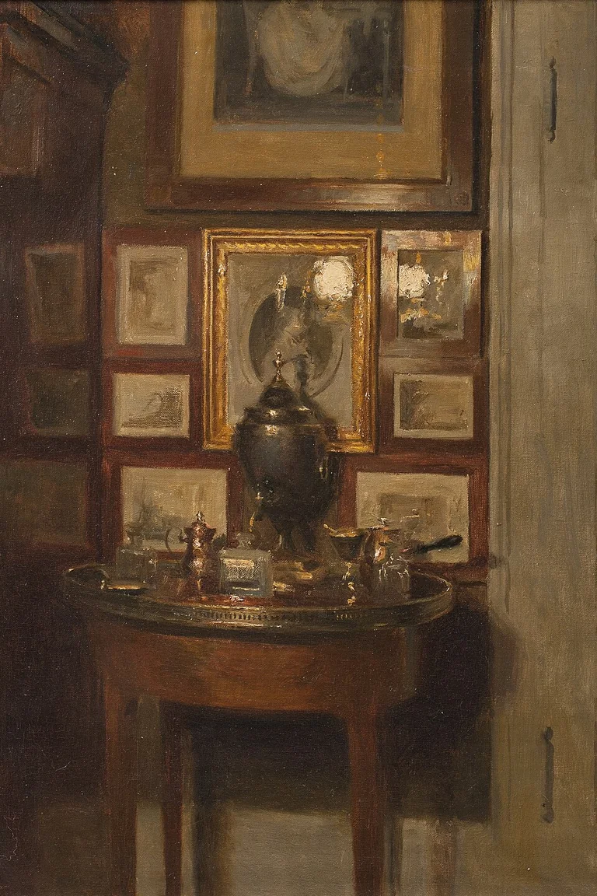

a diary that remembers
Tom Marvolo Riddle
A diary that remembers you.
Some pages stay open long after the candle has gone out.
This is a small, gentle place for a reader who knows the story by heart.

An old study, after midnighta private shrine
Three doors
Choose where the evening should go.